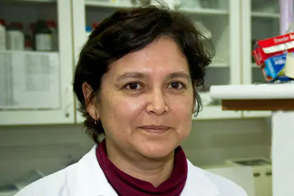

Biología molecular

Patricia Sheen Cortavarría
Patricia ha dedicado más de dos décadas al estudio de la tuberculosis y la resistencia de sus bacterias a los medicamentos. Desarrolló un equipo automático para la descontaminación y concentración de esputo, facilitando el diagnóstico de esta enfermedad. A pesar de su impacto en la salud pública, su trabajo es poco conocido fuera del ámbito científico.